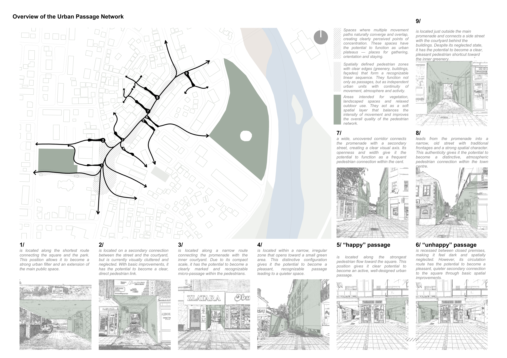
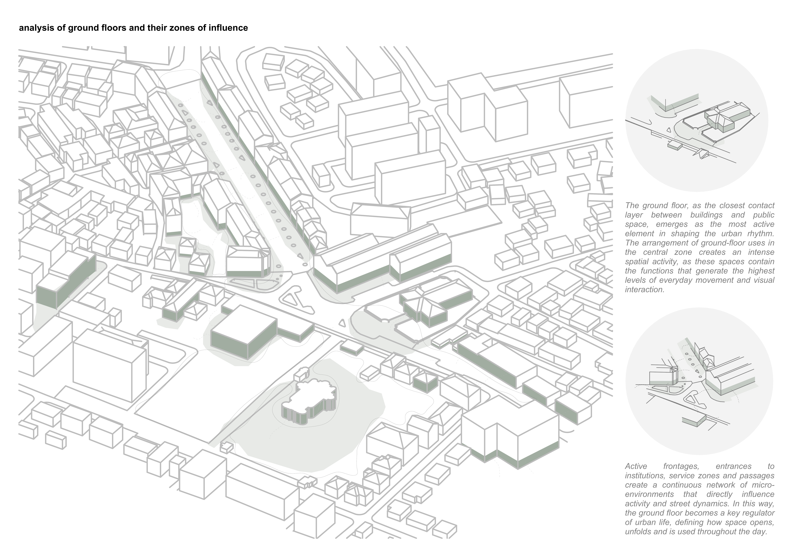
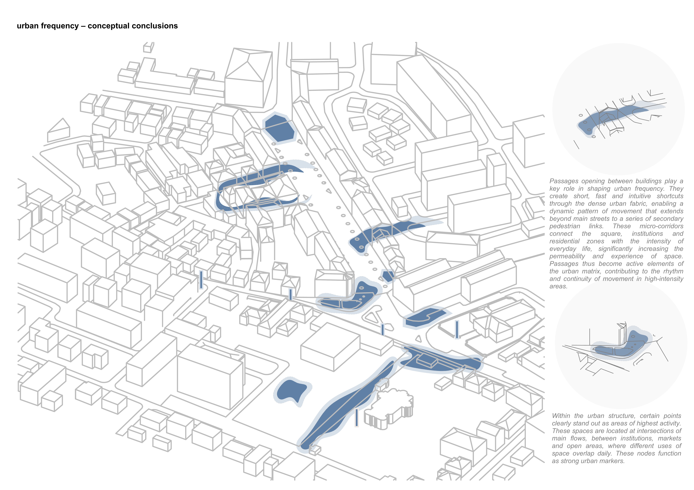
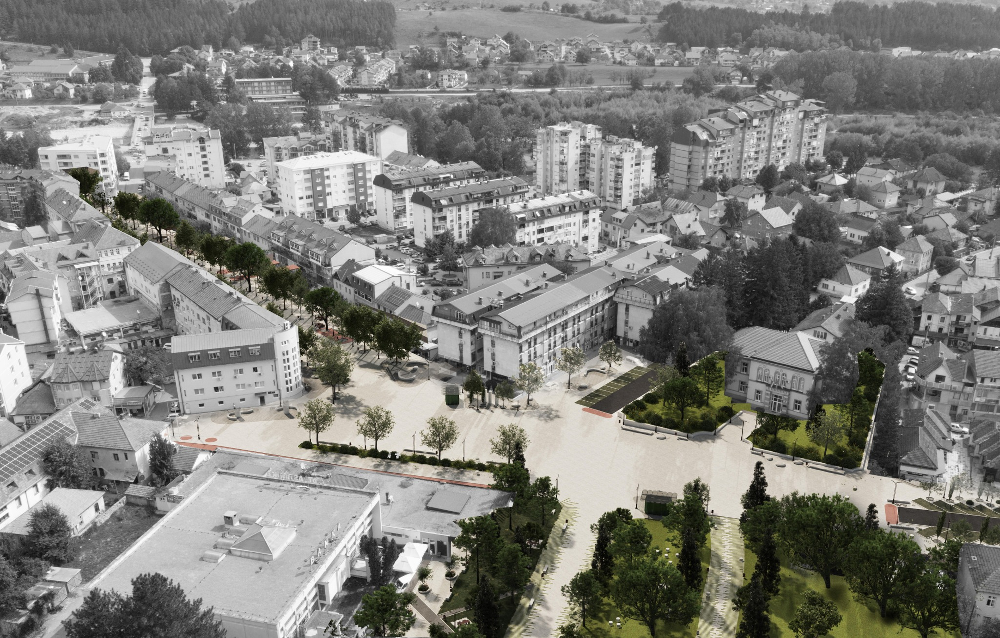
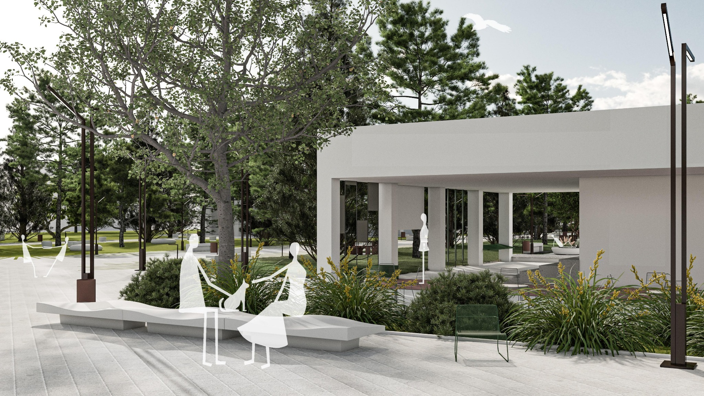
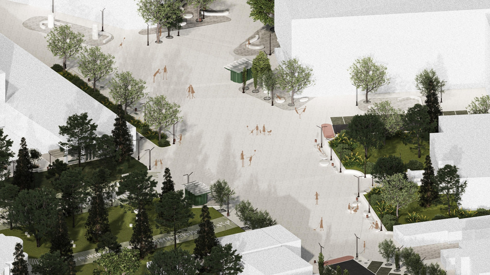
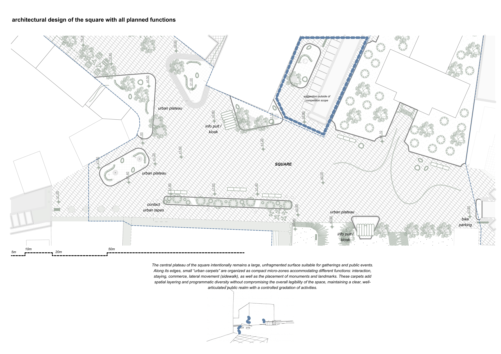
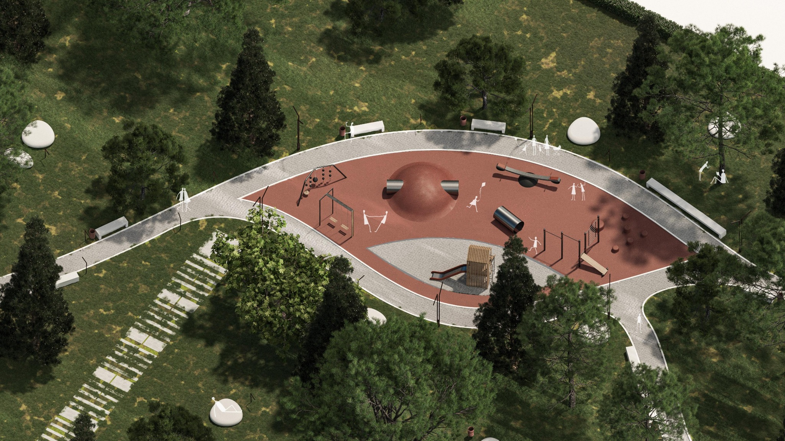
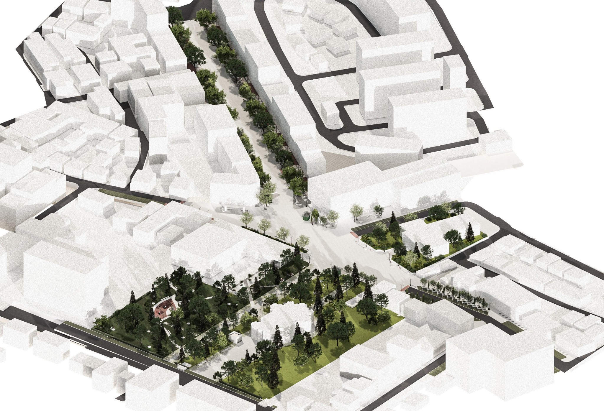

URBAN REGENERATION OF
21 JULY SQUARE
The project proposes the regeneration of Berane’s central public space through the integration of 21 July Square and its surrounding zones into a continuous urban system. The intervention connects the municipal building, city park, the Church of St. Simeon the Myrrh-streaming and the existing promenade, transforming a series of fragmented spaces into a coherent network of public routes and places.
The square becomes a flexible civic plateau for everyday use, gathering and public events, while the park retains its existing natural character through minimal intervention. Together, the square, park, church plateau and promenade establish a continuous sequence of public spaces that strengthens pedestrian movement and reconnects key points within the city centre.













